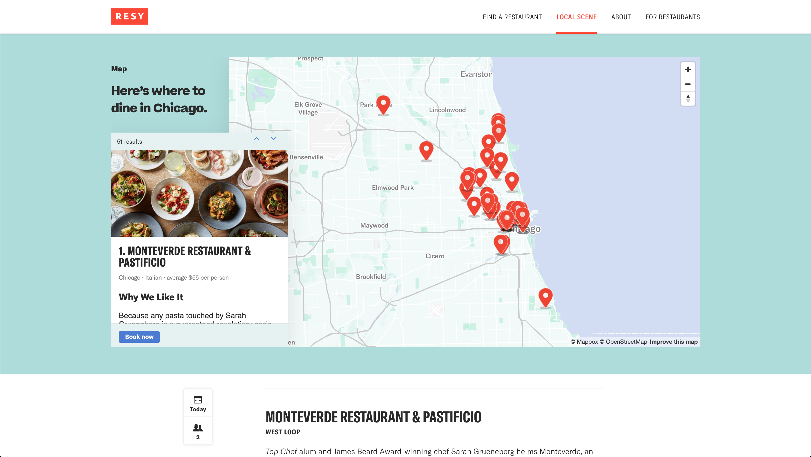

Brief
Create a map using the Mapbox GLJS Library to show different venues featured in a blog post. The map needs to have a card next to it with more information on the selected venue. All this needs to be responsive.
Visuals
- 
Create a map using the Mapbox GLJS Library to show different venues featured in a blog post. The map needs to have a card next to it with more information on the selected venue. All this needs to be responsive.